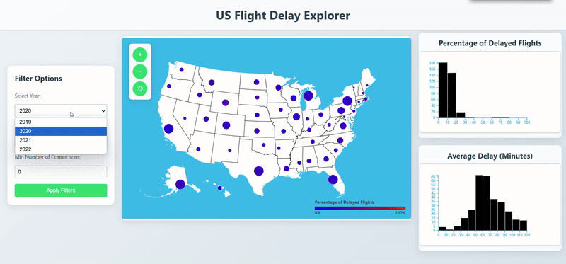
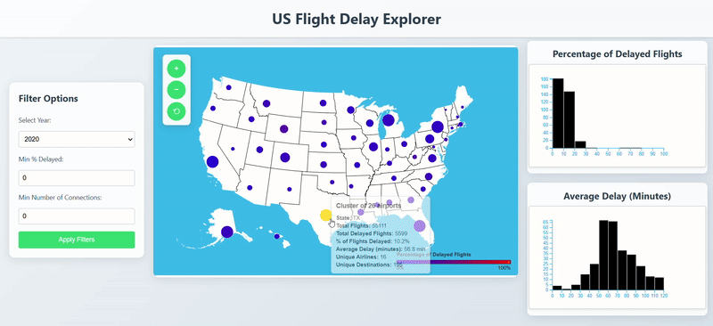

Description
The Flight Delay Explorer is a real-time visualization of the USA map which shows the USA airports and statistics about them. The user is hopefully able to answer the question of which airlines and airports have the highest and lowest delay rates.
This interactive dashboard provides insights into the performance of various airlines, helping users to understand patterns and trends in flight delays and cancellations. By visualizing data from the US Department of Transportation, users can explore:
- Which airports experience the most delays?
- What are the common reasons for flight delays and cancellations?
- How do different airlines compare in terms of on-time performance?
- What time of day or year are delays most likely to occur?
You can try out the project here: Flight Delay Explorer Web
Data
1. Airline Flight Delay and Cancellation Data, August 2019 - August 2023
US Department of Transportation, Bureau of Transportation Statistics
Dataset available at: Kaggle
Variables include:
- Flight routes (origin, destination)
- Time ranges for events (minutes, local time)
- Delay and cancellation reasons/attributions (limited)
2. US Airports dataset
Dataset available at: GitHub
Variables include:
- IATA Airport Code
- Name of the airport, city and state
- Coordinates
Visualization
The visualization features a USA map where each dot represents an airport and is color-coded based on the average percentage of delayed flights at that airport. Dots represent airports aggregated on the state level, and more smaller dots associated with individual airports appear the more you zoom in.

When users hover over an airport, additional information appear, such as airport name and basic information regarding the number of flights, connections, delays and airlines. Additionally, users can select an airport to view its connections to other airports. There is a filter where users can select delay percentage, number of connections or year to filter the data. For a general overview, users can use histograms that provide insights into the distribution of average delays and % of delayed flights; data in histograms can also be filtered. Analysis
This section provides an in-depth analysis of the flight delay data. Users can explore various metrics and trends to gain a better understanding of the factors contributing to flight delays and cancellations.
Key points of analysis include:
- Comparative analysis of airlines based on delay rates, number of presented airlines and avaialable connections.
- Comparative analysis of states and airports based on delay rates.
Links
For further reading and resources, please refer to the following links:
Repository: GitHub